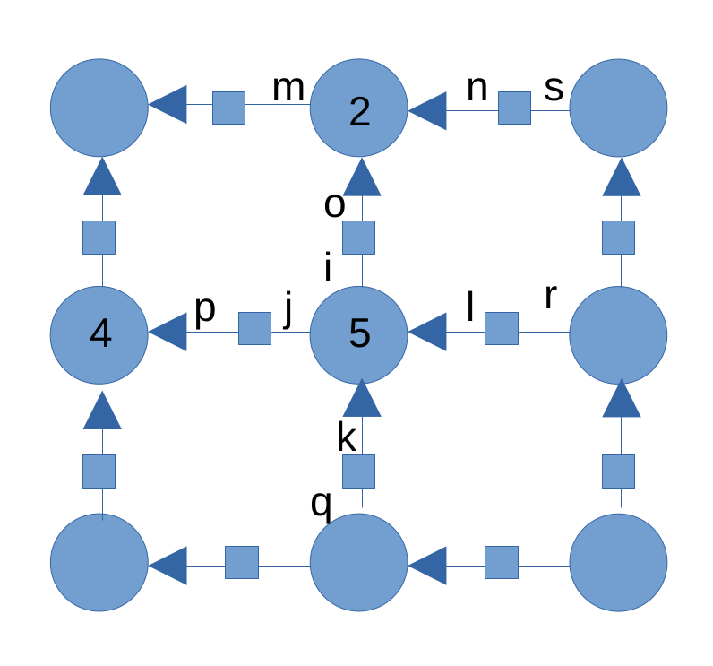
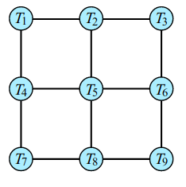
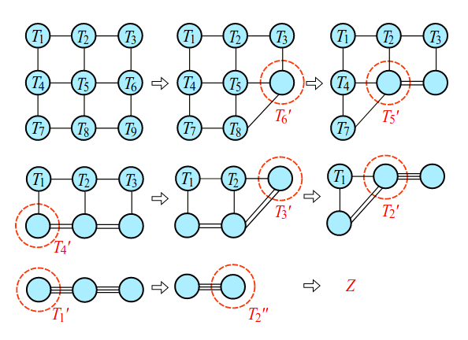

Tensor Network Monte Carlo (TNMC) method将张量网络和蒙特卡洛模拟结合，是一种新的模拟方法。本文分为两个部分，介绍TNMC方法，以及其在随机二维Ising模型上的实验。
Link: * Tensor network Monte Carlo simulations for the two-dimensional random-bond Ising model * Unbiased Monte Carlo for the age of tensor networks
Code: * TNMC
Metropolis-Hasting method
In particular, the local moves can get trapped in local minima, especially in disordered systems, because due to the nature of the rugged energy landscape, the probability of moving to a higher-energy state is low.
对于传统的蒙卡，主要存在两个问题：临界慢化和阻锉模型基态问题，这两个问题是由完全不同的因素造成的。临界慢化的原因是在临界点会形成团簇，单个格点翻转接受概率低，这种阻碍也称为磁畴壁，有效的解决方案是从单一格点翻转改为集体翻转；基态问题是由于模型结构自身具有的阻锉引起的。
这两个问题也可以从自由能的角度看待。自由能是通过熵和能量的竞争得到的，临界慢化对应相变点，此时系统倾向于处于熵极大的构型，也就是在能量相同的情况下拥有尽可能多的构型，但是这样就会遇到采样的困难，目标构型是非常稀疏的；同时还有另一个问题，熵并不容易衡量，这就意味着在穷尽结果前并不知道自己选取的构型是否为目标构型。没有评价指标和稀疏采样，造成临界慢化的困难性。那么提升方案（Swendsen-wang、Wolff）为什么有效呢？它们并没有设计机制解决稀疏采样和无评价指标的问题，而是利用在临界点特性。这些算法敏锐的觉察到，这些目标构型之间存在关联，因此从一个目标构型出发可以快速采样到其它的目标构型。基于此，接受率成为一个很好的评价指标。
那接下来从自由能的角度分析基态。由于温度趋近于零，此时自由能等于能量，而基态的构型是由模型决定的，因此这是具有特定解的问题，同时评价构型优劣的指标为能量，能量越低是更倾向于选择的构型。此时的难点在于如何搜索。主要有两个方面，首先在穷举之前并不清楚目前低能量构型是最低能量构型；其次如何找到高效的搜索的方法。优化策略我认为有两种，首先是通过启发式的方法搜索，给出一个撒点的方式；另一方面是通过将构型的表示方法进行编码，在编码的空间进行搜索，将一些非凸的结构转化为凸性。
竟然没有在博客中写过这个内容…之后想写的话添加上引用。
$$\begin{align} \frac{P\left(\mathbf{s}_b\right)}{P\left(\mathbf{s}_a\right)}&=e^{\beta E\left(\mathbf{s}_a\right)-\beta E\left(\mathbf{s}_b\right)} \\ P(\mathbf{s})&=\prod_{i=1}^N P\left(s_i \mid \mathbf{s}_{<i}\right)\\ P\left(s_i \mid \mathbf{s}_{<\mathbf{i}}\right)&=\frac{\sum_{\mathbf{s}_{>i}} e^{-\beta E\left(s_i, \mathbf{s}_{<i}\right)}}{\sum_{s_i, \mathbf{s}_{>i}} e^{-\beta E\left(s_i, \mathbf{s}_{<i}\right)}}=\frac{Z\left(s_i, \mathbf{s}_{<i}\right)}{\sum_{s_i} Z\left(s_i, \mathbf{s}_{<i}\right)} \label{5} \end{align}$$
Tensor network proposals
将Ising模型求解配分函数的过程转化为张量网络。首先将整个网格表示为：
由节点δ和转移矩阵W组成。其中节点δ的具体表达式，根据其连接边的数目（腿）决定，例如δ1有2条腿、δ2有3条腿、δ5有4条腿。  每一个节点，通过其腿的标号表示，例如δ2 = δmno, δ6 = δijkl，由于Ising模型只有±1，因此每条腿的选项只有1, 2两个，并且δ的取值定为：
$$\begin{align} \delta_{ijkl}= \begin{cases}1 & i=j=k=l \\ 0 & \text { else } \quad(i, j, k, l=1,2)\end{cases} \end{align}$$
每一条腿表示对应格点的自旋取值，因此同一个自旋外延出来的腿应该具有相同的取值。
然后定义转移矩阵：
$$\begin{align} W_{i j}=\left(\begin{array}{cc} e^{\beta J_{i j}} & e^{-\beta J_{i j}} \\ e^{-\beta J_{i j}} & e^{\beta J_{i j}} \end{array}\right) \end{align}$$
其中 W11 = W22 = exp (βJij), W12 = W21 = exp (−βJij)，Jij表示相邻的相互作用系数（Ising模型中是相同的，在spin glass）。
接下来需要进一步对矩阵进行收缩，将转移矩阵收缩进格点中，表示为 
在之前的模型中，箭头表示收缩的方向，由下及上、由左及右。例如δ5会收缩两个方向的，因此将l, k进行求和：
$$\begin{align} T_5 = T_{ijqr}=\sum_l\sum_k \delta_{ijkl} W_{kq}W_{lr} \end{align}$$
δ2同理：
$$\begin{align} T_2 = T_{mis}=\sum_o\sum_n \delta_{nmo} W_{oi}W_{ns} \end{align}$$
接下来对于T2T5的收缩，可以通过对i的求和，表示为∑iTmisTijqr。
因此求配分函数，接下来就是通过指标的收缩求和。 
精确求解这个张量网络会遇到维数增长的问题，可以通过singular-value-decomposition（SVD）近似的方法解决这个问题。
Computing the partition function using tensor networks
计算蒙卡的接受效率，需要通过计算$\eqref{5}$。因此，接下来描述如何利用张量网络结合采样，计算$\eqref{5}$。
以计算s4为例，那么已经提前知道采样s1, s2, s3的值。此时张量网络可以表示为：
当自旋确定，改变的是在自旋收缩的时候，不再是求和而是直接固定。上图展示了如何通过指标的收缩，表示∑s4Z(s4, s < 4)。对于计算Z(s4, s < 4)则需要将，δ4改为固定的s4：
其中f(s4) = eβJ14s1s4，张量两边为s4的取值。然后逐渐增加位置，直到完成整体的采样。
通过如上的计算方式，便可以计算$\eqref{5}$。其中，存在一些小技巧：为了加速，在计算的时候可以存储之前的计算结果，之后相似的构型可以直接查表。
然而这个计算方式也存在问题，看似解决了之前迭代速度慢的问题，但每次迭代比之前要花费更多的时间。这个算法真正有效的地方在于临界行为处，当处理复杂的能量面时候，这个算法能够更快速的迭代，而不是传统蒙卡被困于无穷关联长度中。
Result
接下来在随机二维Ising模型上进行实验，随机体现在自旋之间的相互作用J正负是以p和1 − p的概率选取。
该算法的核心点在于接受率的提升，所以第一个数据展示在SVD不同维度的情况，以及不同温度、不同尺寸的情况下接受率的变化。
第二个实验展示了CPU用时和内存消耗。